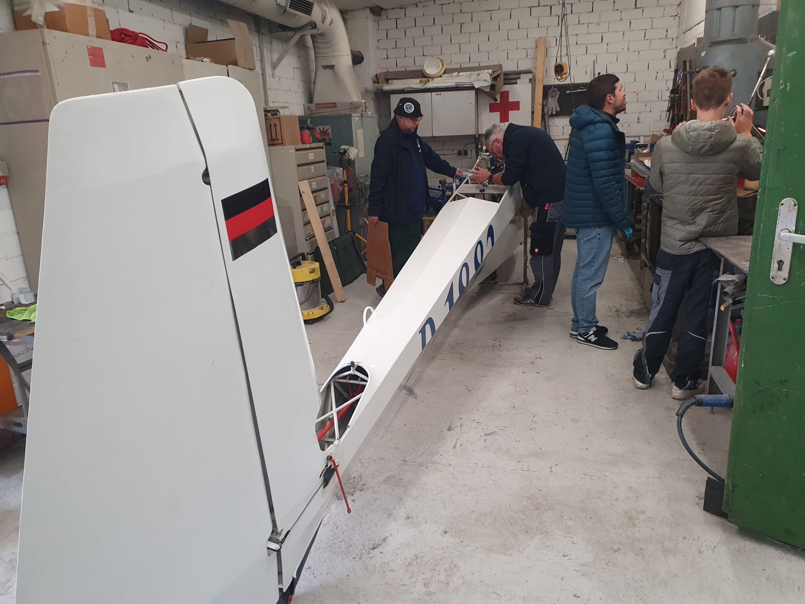
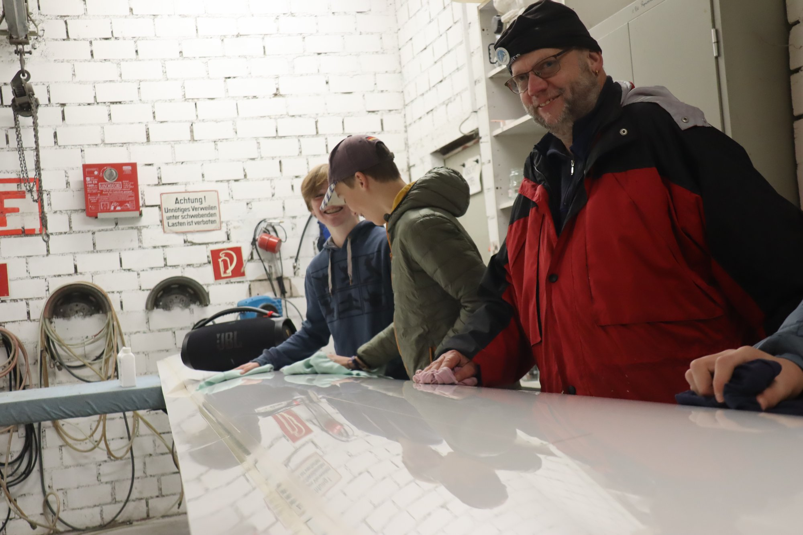
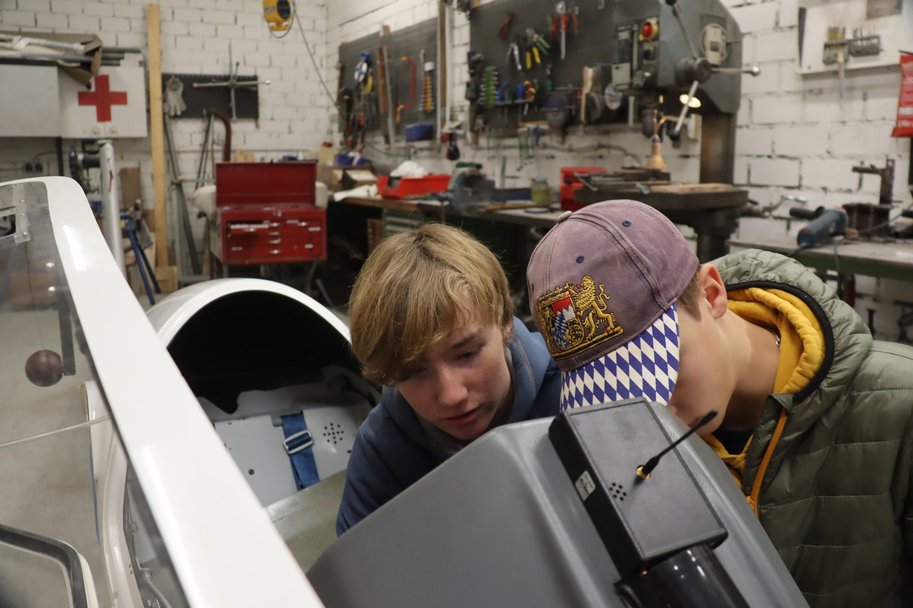
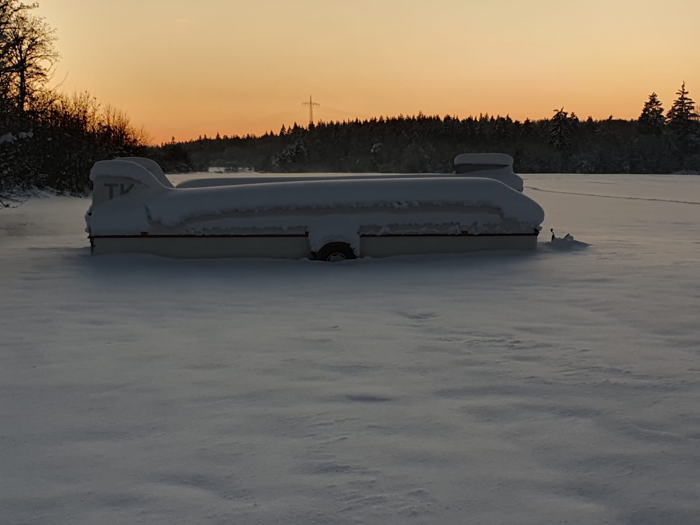
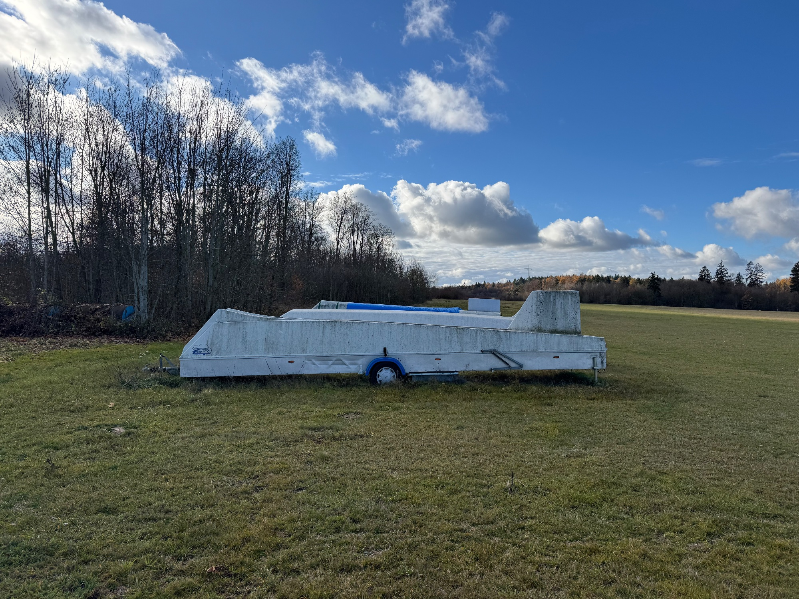
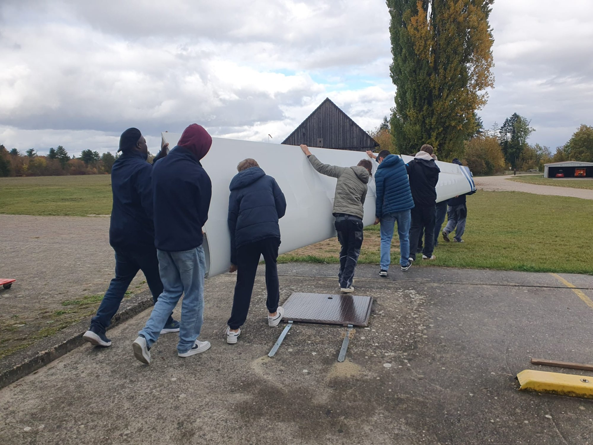
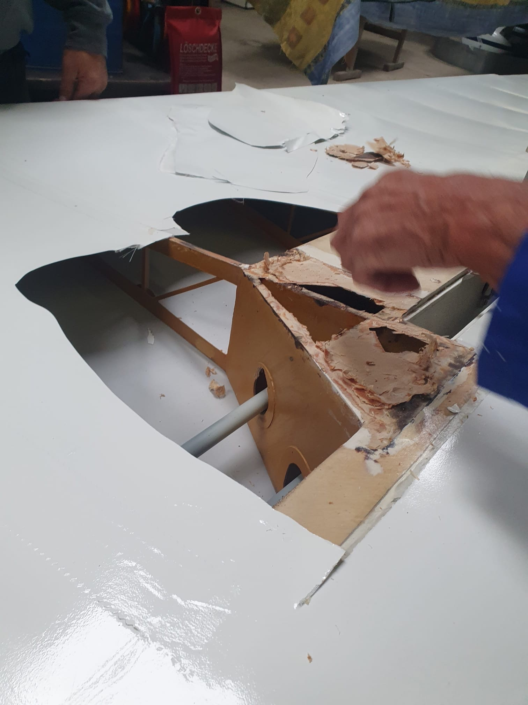
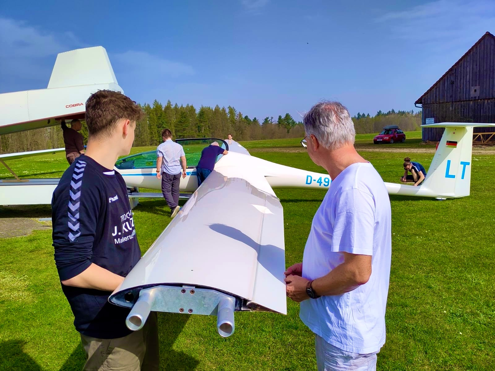
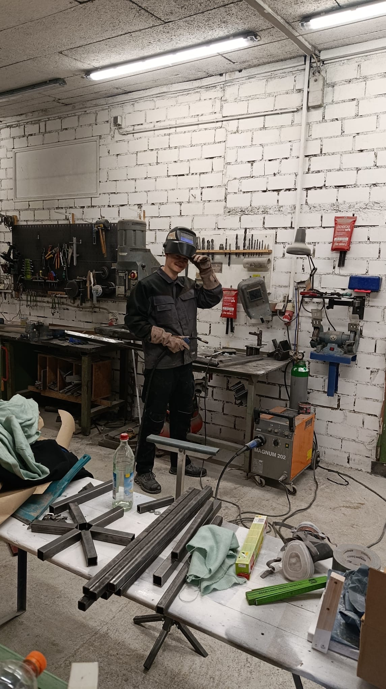

Werkstatt
Hier lernst du dein Flugzeug von allen Seiten kennen.
Arbeiten in unserer Werkstatt!
Auch im Winter ist bei uns einiges los! Wenn die Flugsaison vorbei ist, kümmern sich unsere Vereinsmitglieder gemeinsam um die Wartung und Pflege der Flugzeuge und Fahrzeuge. Dabei wird geschraubt, geprüft und angepackt, damit zum Saisonstart wieder alles bereit für neue Flugabenteuer ist.
Bei den gemeinsamen Arbeitseinsätzen ist jeder willkommen und kann sich einbringen. Neben der Arbeit steht vor allem das Miteinander im Mittelpunkt. Gemeinsam etwas schaffen, neue Leute kennenlernen und Teil einer starken Gemeinschaft sein – das macht unsere Winterarbeit aus. Bei guter Stimmung in der Werkstatt vergeht die Zeit wie im Flug.
Auch technisch gibt es jede Menge zu entdecken: Erfahrene Vereinsmitglieder geben ihr Wissen weiter, erklären Zusammenhänge und stehen bei Fragen mit Rat und Tat zur Seite.
So entstehen spannende Einblicke in die Technik unserer Flugzeuge und es gibt viel Neues zu lernen. Schritt für Schritt wächst dabei nicht nur das technische Verständnis, sondern auch die Verbindung zu unseren Maschinen und zum Verein.
Denn Fliegen bedeutet bei uns mehr als nur in der Luft unterwegs zu sein. Es bedeutet auch, gemeinsam etwas auf die Beine zu stellen und Teil einer Gemeinschaft zu sein, die ihre Begeisterung für die Luftfahrt teilt.
Ein Jahr in der Werkstatt
So läuft der Winter
Oktober: Jahresnachprüfung
Jedes Flugzeug wird von Prüfern abgenommen. Erst dann darf es wieder in die Luft.
Danach: Abrüsten
Nach den letzten Flugtagen werden die Flugzeuge abgerüstet, gereinigt und in die Werkstatt gebracht.
November bis Februar: Wartung
Jetzt wird gewartet, ausgebessert, poliert und gepflegt – Flugzeuge, Anhänger, Winde und Fahrzeuge.
April: Saisonstart
Aufrüsten, Startcheck – und endlich wieder fliegen. Mit Flugzeugen, die du selbst mit vorbereitet hast.
Das erwartet dich
Was im Winter passiert

Holz & Stoff
ASK 13 und Ka 8 sind echte Klassiker aus Holz, Stahlrohre und Stoffbespannung – hier ist Handwerk gefragt.

Flugzeuge polieren
Bei ASK 21, Discus und Co. werden Kratzer ausgebessert und die Oberflächen auf Hochglanz gebracht.

Winde, Anhänger & Fahrzeuge
Auch alles, was am Boden für den Flugbetrieb nötig ist, wird gewartet: Seilwinde, Rückholfahrzeug und Rescue.

Technik
Funkgeräte, Fluginstrumente und Kollisionswarner werden geprüft, damit im Sommer alles zuverlässig funktioniert.
Vorher – nachher
Was einen Winter ausmacht
Zieh den Regler zur Seite und sieh selbst, was einen Winter am Flugplatz Oberhinkofen ausmacht!


Für Jugendliche
Was du dabei lernst
- Wie ein Segelflugzeug aufgebaut ist – von der Steuerung bis zum Fahrwerk.
- Mit Werkzeug, Holz, Stoff und Glasfaser richtig umzugehen.
- Technikwissen, dass dir dein ganzes Leben weiterhilft
- Und ganz nebenbei: Teamarbeit, Geduld und jede Menge Spaß mit den anderen.
Werkstatt-Termine
Samstags, ab 11 Uhr
Du bist neu und Interessierst dich im Winter für den Segelflug? Dann schau doch gerne bei uns in der Werkstatt vorbei. Tritt am besten vorher mit uns in Kontakt dann erfährst du, ob wirklich jemand für dich da ist.
Eindrücke
Aus der Werkstatt





Ansprechpartner
| Technischer Leiter | Roland Pschorn |
|---|---|
| Kontakt | info@luftsportverein-regensburg.de |